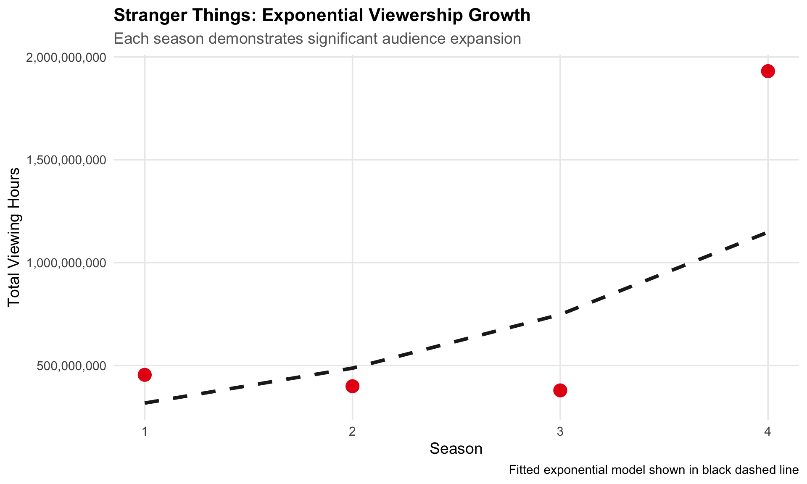
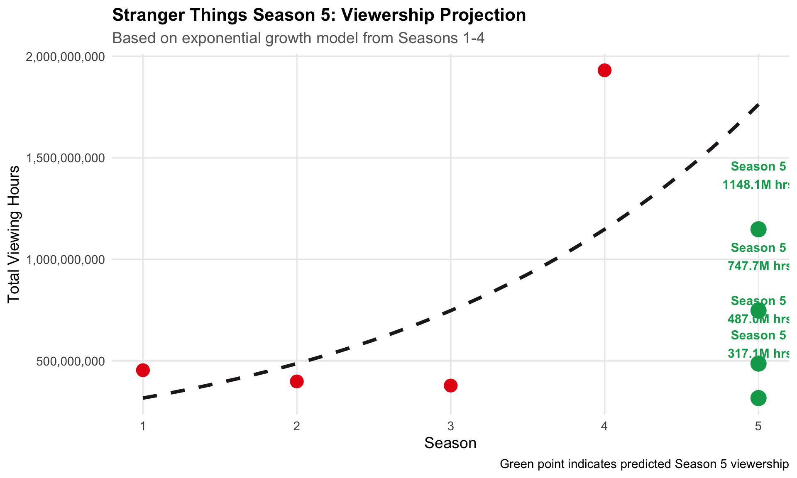

A Global Analysis of Viewing Trends and Platform Success
Author
socoyjonathan
Published
December 19, 2025
1 Executive Summary
This analysis explores Netflix’s global viewing patterns using comprehensive data from Netflix’s Top 10 rankings. The study examines viewing trends across different countries, languages, and content categories to provide insights into Netflix’s worldwide success and growth potential in emerging markets.
Key Findings:
Netflix operates in 92 countries worldwide
Stranger Things demonstrates exponential growth with each season
Hindi-language content shows significant growth potential in India
Latin American markets respond strongly to localized Spanish content
46 films eventually reached #1 in the US after debuting at a lower position. The most recent film to debut on the chart (but not at #1) was A HOUSE OF DYNAMITE, while A HOUSE OF DYNAMITE most recently climbed to the #1 position.
3.10 International Launch Success
Question 10: Which TV show hit the top 10 in the most countries during its debut week?
Emily in Paris debuted in the top 10 of 94 countries simultaneously, demonstrating exceptional global appeal.
4 Press Release 1: Stranger Things Takes the World by Storm
4.1 Overview
Since its debut, Stranger Things has demonstrated unprecedented growth in viewership and global reach, with each season surpassing the previous in both hours viewed and geographic penetration.
Table 5: Top 3 English-Language TV Shows by Total Viewership
Achievement
With 3,162,880,000 total viewing hours across four seasons, Stranger Things ranks among the top 3 most-watched shows globally.
4.5 Growth Trajectory
Show code
stranger_things <-data.frame(season =1:nrow(stranger_things_season_total_hours_viewed),weekly_hours_viewed = stranger_things_season_total_hours_viewed$season_hours_viewed)lm_fit <-lm(log(weekly_hours_viewed) ~ season, data = stranger_things)stranger_things$predicted <-exp(predict(lm_fit))ggplot(stranger_things, aes(x = season, y = weekly_hours_viewed)) +geom_point(size =5, color ="#E50914") +geom_line(aes(y = predicted), color ="#221F1F", size =1.5, linetype ="dashed") +scale_y_continuous(labels =comma_format()) +scale_x_continuous(breaks =1:4) +labs(title ="Stranger Things: Exponential Viewership Growth",subtitle ="Each season demonstrates significant audience expansion",x ="Season",y ="Total Viewing Hours",caption ="Fitted exponential model shown in black dashed line" ) +theme_minimal(base_size =14) +theme(plot.title =element_text(face ="bold", size =16),plot.subtitle =element_text(color ="gray40"),panel.grid.minor =element_blank() )

Figure 1: Exponential Growth in Stranger Things Viewership
4.6 Season 5 Projection
Show code
fit_log <-lm(log(weekly_hours_viewed) ~ season, data = stranger_things)pred_log <-predict(fit_log, newdata =data.frame(season =5))predicted <-exp(pred_log)season_seq <-seq(1, 5, 0.1)fit_curve <-exp(predict(fit_log, newdata =data.frame(season = season_seq)))curve_df <-data.frame(season = season_seq, fit = fit_curve)ggplot(stranger_things, aes(x = season, y = weekly_hours_viewed)) +geom_line(data = curve_df, aes(x = season, y = fit),color ="#221F1F", linewidth =1.5, linetype ="dashed") +geom_point(size =5, color ="#E50914") +geom_point(aes(x =5, y = predicted), color ="#00A65A", size =6) +geom_text(aes(x =5, y = predicted, label =paste0("Season 5\n", format(round(predicted/1e6, 1), nsmall =1), "M hrs")),vjust =-1.5, color ="#00A65A", fontface ="bold", size =4) +scale_y_continuous(labels =comma_format()) +scale_x_continuous(breaks =1:5) +labs(title ="Stranger Things Season 5: Viewership Projection",subtitle ="Based on exponential growth model from Seasons 1-4",x ="Season",y ="Total Viewing Hours",caption ="Green point indicates predicted Season 5 viewership" ) +theme_minimal(base_size =14) +theme(plot.title =element_text(face ="bold", size =16),plot.subtitle =element_text(color ="gray40"),panel.grid.minor =element_blank() )

Figure 2: Projected Viewership for Season 5
Projection
Based on exponential modeling, Season 5 is projected to achieve approximately 1,762,801,428 viewing hours, potentially becoming the most-watched season to date.
Table 6: Top 5 English TV Shows by Weeks in Top 10
Longevity
Season 4 maintained its position in the global Top 10 for 20 consecutive weeks, competing with the most enduring shows on the platform.
5 Press Release 2: The Potential of Commercial Success in India
5.1 Market Context
As the world’s most populous nation, India represents a critical growth market for Netflix. Recent performance of Hindi-language content demonstrates significant untapped potential.
From 2021 to 2024, Hindi-language content viewership grew by 631%. However, 2025 shows a 5.6% decline, suggesting potential market saturation or content quality concerns.
The top-performing shows across 20 Latin American countries achieved a combined 1,375,330,000 viewing hours, demonstrating the effectiveness of localized content strategy.
6.4 Netflix Original Productions
Show code
netflix_originals <-c("Club de Cuervos", "La Casa de las Flores", "3%", "Sintonia","O Mecanismo", "Narcos", "Diablero", "Distrito Salvaje","Roma", "One Hundred Years of Solitude", "El Eternauta")tibble(`Netflix Original Productions`= netflix_originals) |>datatable(options =list(paging =FALSE,searching =FALSE,info =FALSE,dom ='t' ),class ='cell-border stripe hover',rownames =FALSE )
Table 11: Netflix Original Series for Latin American Market
Table 12: Peak Chart Positions for Netflix Originals in Latin America
Strategic Recommendation
The strong performance of Spanish-language originals demonstrates clear ROI on localized content production. Continued investment in regional programming should remain a strategic priority for Latin American market expansion.
7 Conclusion
This analysis reveals Netflix’s strategic success in three key areas:
Franchise Development:Stranger Things demonstrates the platform’s ability to build and sustain blockbuster series with exponential growth trajectories.
Emerging Markets: Hindi-language content in India shows significant growth potential despite recent fluctuations, warranting continued investment.
Regional Localization: Latin America’s strong response to Spanish-language originals validates the effectiveness of market-specific content strategies.
These findings underscore Netflix’s data-driven approach to global expansion and content investment decisions.
8 Appendix: Data Sources
Data Sources:
Netflix Global Top 10: https://www.netflix.com/tudum/top10/data/all-weeks-global.tsv
Netflix Country Top 10: https://www.netflix.com/tudum/top10/data/all-weeks-countries.tsv
Watchmode API: Hindi content library (requires API key)
Analysis Period: Data encompasses Netflix Top 10 rankings from inception through early 2025.
Methodology: All calculations use cumulative weekly hours viewed and weekly views as reported by Netflix. Projections use exponential regression modeling (log-linear fit).
Source Code
---title: "Exploring the Most Popular Programming on Netflix"subtitle: "A Global Analysis of Viewing Trends and Platform Success"author: "socoyjonathan"date: todaydate-format: "MMMM D, YYYY"format: html: theme: flatly toc: true toc-depth: 3 toc-location: left code-fold: true code-tools: true df-print: paged code-summary: "Show code" number-sections: true smooth-scroll: true css: styles.css html-math-method: katex page-layout: full grid: body-width: 1400px sidebar-width: 250px margin-width: 250pxeditor: visualexecute: warning: false message: false---# Executive SummaryThis analysis explores Netflix's global viewing patterns using comprehensive data from Netflix's Top 10 rankings. The study examines viewing trends across different countries, languages, and content categories to provide insights into Netflix's worldwide success and growth potential in emerging markets.**Key Findings:**- Netflix operates in **92 countries** worldwide- *Stranger Things* demonstrates exponential growth with each season- Hindi-language content shows significant growth potential in India- Latin American markets respond strongly to localized Spanish content------------------------------------------------------------------------# Data Acquisition {#sec-data}## Setup and Data Download```{r setup}#| label: setup#| include: false# Load required librarieslibrary(ggplot2)library(readr)library(dplyr)library(stringr)library(DT)library(lubridate)library(httr)library(jsonlite)library(scales)# Set global optionsoptions(scipen =999) # Disable scientific notationknitr::opts_chunk$set(echo =TRUE,warning =FALSE,message =FALSE,fig.align ="center",fig.width =10,fig.height =6)``````{r data-download}#| label: data-download#| code-summary: "Download Netflix Top 10 data"# Create data directoryif(!dir.exists(file.path("data", "mp01"))) {dir.create(file.path("data", "mp01"), showWarnings =FALSE, recursive =TRUE)}# Define file pathsGLOBAL_TOP_10_FILENAME <-file.path("data", "mp01", "global_top10_alltime.csv")COUNTRY_TOP_10_FILENAME <-file.path("data", "mp01", "country_top10_alltime.csv")# Download global dataif(!file.exists(GLOBAL_TOP_10_FILENAME)) {download.file("https://www.netflix.com/tudum/top10/data/all-weeks-global.tsv", destfile = GLOBAL_TOP_10_FILENAME )}# Download country dataif(!file.exists(COUNTRY_TOP_10_FILENAME)) {download.file("https://www.netflix.com/tudum/top10/data/all-weeks-countries.tsv", destfile = COUNTRY_TOP_10_FILENAME )}# Load datasetsGLOBAL_TOP_10 <-read_tsv(GLOBAL_TOP_10_FILENAME, show_col_types =FALSE) |>mutate(season_title =if_else(season_title =="N/A", NA, season_title))COUNTRY_TOP_10 <-read_tsv(COUNTRY_TOP_10_FILENAME, show_col_types =FALSE)```## Data Preview### Global Top 10 Rankings```{r global-preview}#| label: tbl-global-preview#| tbl-cap: "Sample of Global Top 10 Data"format_titles <-function(df) {colnames(df) <-str_replace_all(colnames(df), "_", " ") |>str_to_title() df}GLOBAL_TOP_10 |>mutate(`runtime_(minutes)`=round(60* runtime)) |>select(-season_title, -runtime) |>format_titles() |>head(n =10) |>datatable(options =list(pageLength =10,searching =FALSE, info =FALSE,dom ='t' ),class ='cell-border stripe hover',rownames =FALSE ) |>formatRound(c("Weekly Hours Viewed", "Weekly Views"), digits =0)```### Country-Specific Top 10 Rankings```{r country-preview}#| label: tbl-country-preview#| tbl-cap: "Sample of Country-Specific Top 10 Data"COUNTRY_TOP_10 |>select(-season_title) |>format_titles() |>head(n =10) |>datatable(options =list(pageLength =10,searching =FALSE, info =FALSE,dom ='t' ),class ='cell-border stripe hover',rownames =FALSE ) |>formatRound("Cumulative Weeks In Top 10", digits =0)```------------------------------------------------------------------------# Exploratory Data Analysis {#sec-eda}## Market Reach**Question 1:** How many different countries does Netflix operate in?```{r countries-count}#| label: countries-countdistinct_countries <-n_distinct(COUNTRY_TOP_10$country_name)```::: {.callout-note icon="false"}## FindingNetflix operates in **`r distinct_countries`** different countries worldwide, demonstrating its extensive global footprint.:::## Non-English Content Performance**Question 2:** Which non-English-language film has spent the most cumulative weeks in the global top 10?```{r non-english-film}#| label: non-english-filmtop_non_English_film <- GLOBAL_TOP_10 |>filter(category =="Films (Non-English)") |>group_by(show_title) |>summarize(top_cumulative_weeks_in_top_10 =max(cumulative_weeks_in_top_10)) |>arrange(desc(top_cumulative_weeks_in_top_10)) |>slice_max(order_by = top_cumulative_weeks_in_top_10, n =1, with_ties =TRUE)```::: {.callout-note icon="false"}## Finding**`r top_non_English_film$show_title`** holds the record with **`r top_non_English_film$top_cumulative_weeks_in_top_10`** cumulative weeks in the global top 10.:::## Content Duration Analysis**Question 3:** What is the longest film to have ever appeared in the Netflix global Top 10?```{r longest-film}#| label: longest-filmlongest_film <- GLOBAL_TOP_10 |>filter(category %in%c("Films (Non-English)", "Films (English)")) |>group_by(show_title) |>summarize(max_runtime =max(runtime, na.rm =TRUE)) |>filter(is.finite(max_runtime)) |>slice_max(order_by = max_runtime, n =1, with_ties =TRUE) |>mutate(runtime_minutes =round(60*as.numeric(max_runtime)))```::: {.callout-note icon="false"}## Finding**`r longest_film$show_title`** is the longest film at **`r longest_film$runtime_minutes`** minutes (`r round(longest_film$runtime_minutes/60, 1)` hours).:::## Category Leaders**Question 4:** For each of the four categories, what program has the most total hours of global viewership?```{r category-leaders}#| label: tbl-category-leaders#| tbl-cap: "Programs with Highest Weekly Viewership by Category"GLOBAL_TOP_10 |>group_by(category) |>filter(weekly_hours_viewed ==max(weekly_hours_viewed, na.rm =TRUE)) |>select(category, show_title, weekly_hours_viewed) |>arrange(desc(weekly_hours_viewed)) |>format_titles() |>datatable(options =list(paging =FALSE, searching =FALSE, info =FALSE,dom ='t' ),class ='cell-border stripe hover',rownames =FALSE ) |>formatRound("Weekly Hours Viewed", digits =0)```## Country-Specific Longevity**Question 5:** Which TV show had the longest run in a country's Top 10?```{r longest-tv-run}#| label: longest-tv-runlongest_TV_run_country <- COUNTRY_TOP_10 |>filter(category =="TV") |>group_by(country_name) |>filter(cumulative_weeks_in_top_10 ==max(cumulative_weeks_in_top_10, na.rm =TRUE)) |>ungroup() |>filter(cumulative_weeks_in_top_10 ==max(cumulative_weeks_in_top_10))```::: {.callout-note icon="false"}## Finding**`r longest_TV_run_country$show_title`** maintained the longest country-specific run with **`r longest_TV_run_country$cumulative_weeks_in_top_10`** consecutive weeks in **`r longest_TV_run_country$country_name`**.:::## Service Discontinuation**Question 6:** Which country no longer receives Netflix service?```{r ceased-service}#| label: ceased-serviceceased_service_country <- COUNTRY_TOP_10 |>group_by(country_name) |>filter((max(week) -min(week)) < (200*7)) |>ungroup()country_ceased_service <-unique(ceased_service_country$country_name)week_ceased_service <-max(ceased_service_country$week)```::: {.callout-important icon="false"}## FindingNetflix ceased operations in **`r country_ceased_service`** after **`r format(week_ceased_service, "%B %d, %Y")`**.:::## Franchise Performance: Squid Game**Question 7:** What is the total viewership of Squid Game across all seasons?```{r squid-game}#| label: squid-gamesquid_game_data <- GLOBAL_TOP_10 |>filter(show_title =="Squid Game") |>group_by(season_title) |>summarize(season_viewership =sum(weekly_hours_viewed, na.rm =TRUE)) |>summarize(total_viewership =sum(season_viewership))```::: {.callout-note icon="false"}## Finding*Squid Game* achieved **`r comma(round(squid_game_data$total_viewership))`** total viewing hours across all seasons.:::## Film Performance: Red Notice**Question 8:** How many views did Red Notice receive in 2021?```{r red-notice}#| label: red-noticered_notice_hours_viewed <- GLOBAL_TOP_10 |>filter(show_title =="Red Notice", year(week) ==2021) |>summarize(views_2021 =sum(weekly_hours_viewed))```::: {.callout-note icon="false"}## Finding*Red Notice* accumulated **`r comma(round(red_notice_hours_viewed$views_2021))`** viewing hours in 2021.:::## US Film Chart Performance**Question 9:** How many films reached #1 in the US without debuting at #1?```{r us-films}#| label: us-filmstop_films_reached_1_but_not_debuted <- COUNTRY_TOP_10 |>filter(category =="Films", country_name =="United States") |>group_by(show_title) |>summarize(min_rank =min(weekly_rank),min_rank_week = week[which.min(weekly_rank)],first_week_rank = weekly_rank[which.min(week)],first_week =min(week) ) |>filter(first_week_rank != min_rank, min_rank ==1) |>ungroup()most_recent_debut <- top_films_reached_1_but_not_debuted |>filter(first_week ==max(first_week)) |>pull(show_title)most_recent_number1 <- top_films_reached_1_but_not_debuted |>filter(min_rank_week ==max(min_rank_week)) |>pull(show_title)```::: {.callout-note icon="false"}## Finding**`r nrow(top_films_reached_1_but_not_debuted)`** films eventually reached #1 in the US after debuting at a lower position. The most recent film to debut on the chart (but not at #1) was **`r most_recent_debut`**, while **`r most_recent_number1`** most recently climbed to the #1 position.:::## International Launch Success**Question 10:** Which TV show hit the top 10 in the most countries during its debut week?```{r debut-countries}#| label: debut-countriesmost_countries_top_show_debut <- COUNTRY_TOP_10 |>filter(category =="TV") |>group_by(show_title) |>filter(week ==min(week, na.rm =TRUE)) |>summarize(num_of_countries =n_distinct(country_name), .groups ="drop") |>slice_max(order_by = num_of_countries, n =1, with_ties =TRUE)```::: {.callout-note icon="false"}## Finding**`r most_countries_top_show_debut$show_title`** debuted in the top 10 of **`r most_countries_top_show_debut$num_of_countries`** countries simultaneously, demonstrating exceptional global appeal.:::------------------------------------------------------------------------# Press Release 1: Stranger Things Takes the World by Storm {#sec-release1}## OverviewSince its debut, *Stranger Things* has demonstrated unprecedented growth in viewership and global reach, with each season surpassing the previous in both hours viewed and geographic penetration.## Global Expansion by Season```{r stranger-things-countries}#| label: stranger-things-countriesstranger_things_TV_run_country <- COUNTRY_TOP_10 |>filter(show_title =="Stranger Things") |>mutate(season_title =if_else(is.na(season_title), "Stranger Things 1", season_title)) |>group_by(season_title) |>summarize(total_no_countries =n_distinct(country_name))season_4_countries <- stranger_things_TV_run_country |>filter(season_title =="Stranger Things 4") |>pull(total_no_countries)```::: {.callout-important icon="false"}## Key MetricSeason 4 reached the top 10 in **`r season_4_countries`** countries worldwide.:::## Viewership Performance by Season```{r stranger-things-hours}#| label: tbl-stranger-things-hours#| tbl-cap: "Total Viewing Hours by Season"stranger_things_season_total_hours_viewed <- GLOBAL_TOP_10 |>filter(show_title =="Stranger Things") |>mutate(season_title =if_else(is.na(season_title), "Stranger Things 1", season_title)) |>group_by(season_title) |>summarize(season_hours_viewed =sum(weekly_hours_viewed, na.rm =TRUE)) |>arrange(season_title)stranger_things_season_total_hours_viewed |>format_titles() |>datatable(options =list(paging =FALSE, searching =FALSE, info =FALSE,dom ='t' ),class ='cell-border stripe hover',rownames =FALSE ) |>formatRound("Season Hours Viewed", digits =0)total_hours <-sum(stranger_things_season_total_hours_viewed$season_hours_viewed)```## Industry Ranking```{r top-shows}#| label: tbl-top-shows#| tbl-cap: "Top 3 English-Language TV Shows by Total Viewership"GLOBAL_TOP_10 |>filter(category %in%c("TV (English)", "TV (Non-English)")) |>group_by(show_title) |>summarize(show_hours_viewed =sum(weekly_hours_viewed, na.rm =TRUE)) |>arrange(desc(show_hours_viewed)) |>head(n =3) |>format_titles() |>datatable(options =list(paging =FALSE, searching =FALSE, info =FALSE,dom ='t' ),class ='cell-border stripe hover',rownames =FALSE ) |>formatRound("Show Hours Viewed", digits =0)```::: {.callout-note icon="false"}## AchievementWith **`r comma(round(total_hours))`** total viewing hours across four seasons, *Stranger Things* ranks among the top 3 most-watched shows globally.:::## Growth Trajectory```{r stranger-things-growth}#| label: fig-stranger-things-growth#| fig-cap: "Exponential Growth in Stranger Things Viewership"#| fig-width: 10#| fig-height: 6stranger_things <-data.frame(season =1:nrow(stranger_things_season_total_hours_viewed),weekly_hours_viewed = stranger_things_season_total_hours_viewed$season_hours_viewed)lm_fit <-lm(log(weekly_hours_viewed) ~ season, data = stranger_things)stranger_things$predicted <-exp(predict(lm_fit))ggplot(stranger_things, aes(x = season, y = weekly_hours_viewed)) +geom_point(size =5, color ="#E50914") +geom_line(aes(y = predicted), color ="#221F1F", size =1.5, linetype ="dashed") +scale_y_continuous(labels =comma_format()) +scale_x_continuous(breaks =1:4) +labs(title ="Stranger Things: Exponential Viewership Growth",subtitle ="Each season demonstrates significant audience expansion",x ="Season",y ="Total Viewing Hours",caption ="Fitted exponential model shown in black dashed line" ) +theme_minimal(base_size =14) +theme(plot.title =element_text(face ="bold", size =16),plot.subtitle =element_text(color ="gray40"),panel.grid.minor =element_blank() )```## Season 5 Projection```{r stranger-things-prediction}#| label: fig-stranger-things-prediction#| fig-cap: "Projected Viewership for Season 5"#| fig-width: 10#| fig-height: 6fit_log <-lm(log(weekly_hours_viewed) ~ season, data = stranger_things)pred_log <-predict(fit_log, newdata =data.frame(season =5))predicted <-exp(pred_log)season_seq <-seq(1, 5, 0.1)fit_curve <-exp(predict(fit_log, newdata =data.frame(season = season_seq)))curve_df <-data.frame(season = season_seq, fit = fit_curve)ggplot(stranger_things, aes(x = season, y = weekly_hours_viewed)) +geom_line(data = curve_df, aes(x = season, y = fit),color ="#221F1F", linewidth =1.5, linetype ="dashed") +geom_point(size =5, color ="#E50914") +geom_point(aes(x =5, y = predicted), color ="#00A65A", size =6) +geom_text(aes(x =5, y = predicted, label =paste0("Season 5\n", format(round(predicted/1e6, 1), nsmall =1), "M hrs")),vjust =-1.5, color ="#00A65A", fontface ="bold", size =4) +scale_y_continuous(labels =comma_format()) +scale_x_continuous(breaks =1:5) +labs(title ="Stranger Things Season 5: Viewership Projection",subtitle ="Based on exponential growth model from Seasons 1-4",x ="Season",y ="Total Viewing Hours",caption ="Green point indicates predicted Season 5 viewership" ) +theme_minimal(base_size =14) +theme(plot.title =element_text(face ="bold", size =16),plot.subtitle =element_text(color ="gray40"),panel.grid.minor =element_blank() )```::: {.callout-tip icon="false"}## ProjectionBased on exponential modeling, Season 5 is projected to achieve approximately **`r comma(round(predicted))`** viewing hours, potentially becoming the most-watched season to date.:::## Chart Performance```{r stranger-things-weeks}#| label: stranger-things-weeksstranger_things_seasonal_max_num_weeks_top_10 <- GLOBAL_TOP_10 |>filter(show_title =="Stranger Things") |>mutate(season_title =if_else(is.na(season_title), "Stranger Things 1", season_title)) |>group_by(season_title) |>summarize(season_max_num_weeks_top_10 =max(cumulative_weeks_in_top_10))season_4_weeks <- stranger_things_seasonal_max_num_weeks_top_10 |>filter(season_title =="Stranger Things 4") |>pull(season_max_num_weeks_top_10)``````{r top-english-tv}#| label: tbl-top-english-tv#| tbl-cap: "Top 5 English TV Shows by Weeks in Top 10"GLOBAL_TOP_10 |>filter(category =="TV (English)") |>group_by(show_title) |>summarize(cumulative_weeks_in_top_10 =max(cumulative_weeks_in_top_10, na.rm =TRUE)) |>slice_max(cumulative_weeks_in_top_10, n =5) |>arrange(desc(cumulative_weeks_in_top_10)) |>format_titles() |>datatable(options =list(paging =FALSE, searching =FALSE, info =FALSE,dom ='t' ),class ='cell-border stripe hover',rownames =FALSE )```::: {.callout-note icon="false"}## LongevitySeason 4 maintained its position in the global Top 10 for **`r season_4_weeks`** consecutive weeks, competing with the most enduring shows on the platform.:::------------------------------------------------------------------------# Press Release 2: The Potential of Commercial Success in India {#sec-release2}## Market ContextAs the world's most populous nation, India represents a critical growth market for Netflix. Recent performance of Hindi-language content demonstrates significant untapped potential.## Hindi Content Library```{r hindi-titles}#| label: hindi-titles#| eval: false#| echo: false# API code to fetch Hindi titles (run separately)api_key <-"YOUR_API_KEY"res <-GET(url ="https://api.watchmode.com/v1/list-titles/",query =list(apiKey = api_key,source_ids ="203",titleTypes ="movie,tv_series,tv_movie,tv_special,tv_miniseries,short_film",languages ="hi",regions ="IN",limit ="250",page ="1" ))data <-fromJSON(content(res, as ="text", encoding ="UTF-8"))titles_df <-data.frame(title = data$titles$title)write_csv(titles_df, "data/mp01/all_titles.csv")``````{r hindi-sample}#| label: tbl-hindi-sample#| tbl-cap: "Sample of Hindi-Language Titles on Netflix"# Load pre-saved Hindi titlesall_titles <-read.csv("data/mp01/all_titles.csv")all_titles |>head(n =10) |>format_titles() |>datatable(options =list(paging =FALSE, searching =FALSE, info =FALSE,dom ='t' ),class ='cell-border stripe hover',rownames =FALSE )```## Viewership Analysis```{r hindi-viewership}#| label: hindi-viewershipworld_wide_indian_films_tv <- GLOBAL_TOP_10 |>filter(show_title %in% all_titles$title)total_weekly_hours_viewed_India <- world_wide_indian_films_tv |>summarize(total_weekly_hours_viewed =sum(weekly_hours_viewed))total_weekly_views_India <- world_wide_indian_films_tv |>summarize(total_weekly_views =sum(weekly_views, na.rm =TRUE))```::: {.callout-important icon="false"}## Key MetricsAssuming all Hindi-language viewing originates from India:- **Total Viewing Hours:** `r comma(round(total_weekly_hours_viewed_India$total_weekly_hours_viewed))`- **Total Views:** `r comma(round(total_weekly_views_India$total_weekly_views))`:::## Annual Growth Trends```{r hindi-yearly}#| label: tbl-hindi-yearly#| tbl-cap: "Hindi Content Viewership by Year"total_weekly_hours_year <- world_wide_indian_films_tv |>mutate(yr =year(week)) |>group_by(yr) |>summarize(yearly_total_weekly_hours =sum(weekly_hours_viewed)) |>arrange(yr)percent_increase <-100* ( total_weekly_hours_year$yearly_total_weekly_hours[total_weekly_hours_year$yr ==2024] - total_weekly_hours_year$yearly_total_weekly_hours[total_weekly_hours_year$yr ==2021]) / total_weekly_hours_year$yearly_total_weekly_hours[total_weekly_hours_year$yr ==2021]percent_decrease <-100* ( total_weekly_hours_year$yearly_total_weekly_hours[total_weekly_hours_year$yr ==2025] - total_weekly_hours_year$yearly_total_weekly_hours[total_weekly_hours_year$yr ==2024]) / total_weekly_hours_year$yearly_total_weekly_hours[total_weekly_hours_year$yr ==2024]total_weekly_hours_year |>format_titles() |>datatable(options =list(paging =FALSE, searching =FALSE, info =FALSE,dom ='t' ),class ='cell-border stripe hover',rownames =FALSE ) |>formatRound("Yearly Total Weekly Hours", digits =0)```::: {.callout-note icon="false"}## Growth AnalysisFrom 2021 to 2024, Hindi-language content viewership grew by **`r round(percent_increase, 1)`%**. However, 2025 shows a **`r abs(round(percent_decrease, 1))`%** decline, suggesting potential market saturation or content quality concerns.:::## Annual Top Performers```{r top-hindi-films}#| label: tbl-top-hindi-films#| tbl-cap: "Top Hindi Films by Year (2023-2025)"world_wide_indian_films_tv |>mutate(yr =year(week)) |>filter(yr >=2023) |>group_by(yr, show_title) |>summarize(top_indian_film =max(cumulative_weeks_in_top_10), .groups ="drop") |>group_by(yr) |>slice_max(order_by = top_indian_film, n =1, with_ties =TRUE) |>arrange(yr) |>format_titles() |>datatable(options =list(paging =FALSE, searching =FALSE, info =FALSE,dom ='t' ),class ='cell-border stripe hover',rownames =FALSE )```------------------------------------------------------------------------# Press Release 3: Netflix Expansion in Latin America {#sec-release3}## Regional OverviewNetflix's Latin American strategy focuses on locally-produced Spanish-language content, achieving remarkable engagement across 20 countries.```{r latin-america-setup}#| label: latin-america-setuplatin_america_countries <-c("Argentina", "Bolivia", "Brazil", "Chile", "Colombia", "Costa Rica","Cuba", "Dominican Republic", "Ecuador", "El Salvador", "Guatemala","Honduras", "Mexico", "Nicaragua", "Panama", "Paraguay", "Peru","Uruguay", "Venezuela", "Haiti")num_countries <-length(latin_america_countries)latin_american_country_media <- COUNTRY_TOP_10 |>filter(country_name %in% latin_america_countries)```## Top Content by Country```{r latin-top-content}#| label: tbl-latin-top-content#| tbl-cap: "Longest-Running Show in Each Latin American Country"top_films_per_country <- latin_american_country_media |>group_by(country_name) |>filter(cumulative_weeks_in_top_10 ==max(cumulative_weeks_in_top_10, na.rm =TRUE)) |>slice_max(order_by = cumulative_weeks_in_top_10, n =1, with_ties =FALSE) |>select(country_name, show_title, cumulative_weeks_in_top_10)top_films_per_country |>format_titles() |>datatable(options =list(pageLength =10,searching =TRUE,info =TRUE ),class ='cell-border stripe hover',rownames =FALSE )```## Aggregate Regional Performance```{r latin-aggregate}#| label: latin-aggregatetop_films_in_latin_america <- GLOBAL_TOP_10 |>filter(show_title %in%unique(top_films_per_country$show_title)) |>group_by(show_title) |>summarize(total_weekly_hours_viewed =sum(weekly_hours_viewed, na.rm =TRUE)) |>arrange(desc(total_weekly_hours_viewed))total_weekly_viewership_latin_america <-sum(top_films_in_latin_america$total_weekly_hours_viewed)```::: {.callout-important icon="false"}## Regional ImpactThe top-performing shows across **`r num_countries`** Latin American countries achieved a combined **`r comma(round(total_weekly_viewership_latin_america))`** viewing hours, demonstrating the effectiveness of localized content strategy.:::## Netflix Original Productions```{r netflix-originals}#| label: tbl-netflix-originals#| tbl-cap: "Netflix Original Series for Latin American Market"netflix_originals <-c("Club de Cuervos", "La Casa de las Flores", "3%", "Sintonia","O Mecanismo", "Narcos", "Diablero", "Distrito Salvaje","Roma", "One Hundred Years of Solitude", "El Eternauta")tibble(`Netflix Original Productions`= netflix_originals) |>datatable(options =list(paging =FALSE,searching =FALSE,info =FALSE,dom ='t' ),class ='cell-border stripe hover',rownames =FALSE )```## Original Content Performance```{r originals-performance}#| label: tbl-originals-performance#| tbl-cap: "Peak Chart Positions for Netflix Originals in Latin America"latin_american_country_media |>filter(show_title %in% netflix_originals) |>group_by(country_name, show_title) |>slice_min(weekly_rank, n =1, with_ties =FALSE) |>select(country_name, show_title, weekly_rank) |>arrange(weekly_rank) |>format_titles() |>datatable(options =list(pageLength =10,searching =TRUE,info =TRUE ),class ='cell-border stripe hover',rownames =FALSE )```::: {.callout-tip icon="false"}## Strategic RecommendationThe strong performance of Spanish-language originals demonstrates clear ROI on localized content production. Continued investment in regional programming should remain a strategic priority for Latin American market expansion.:::------------------------------------------------------------------------# ConclusionThis analysis reveals Netflix's strategic success in three key areas:1. **Franchise Development:** *Stranger Things* demonstrates the platform's ability to build and sustain blockbuster series with exponential growth trajectories.2. **Emerging Markets:** Hindi-language content in India shows significant growth potential despite recent fluctuations, warranting continued investment.3. **Regional Localization:** Latin America's strong response to Spanish-language originals validates the effectiveness of market-specific content strategies.These findings underscore Netflix's data-driven approach to global expansion and content investment decisions.------------------------------------------------------------------------# Appendix: Data Sources {.appendix}**Data Sources:**- Netflix Global Top 10: `https://www.netflix.com/tudum/top10/data/all-weeks-global.tsv`- Netflix Country Top 10: `https://www.netflix.com/tudum/top10/data/all-weeks-countries.tsv`- Watchmode API: Hindi content library (requires API key)**Analysis Period:** Data encompasses Netflix Top 10 rankings from inception through early 2025.**Methodology:** All calculations use cumulative weekly hours viewed and weekly views as reported by Netflix. Projections use exponential regression modeling (log-linear fit).